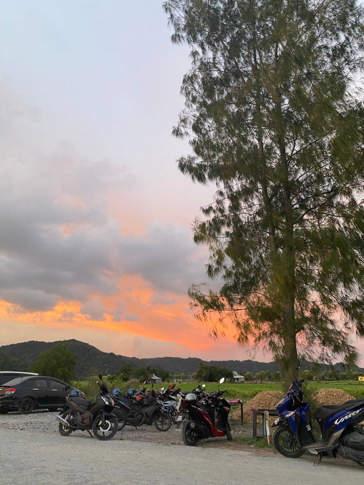

I was born and raised in Perlis, and it’s a place I hold dear to my heart. Growing up here, I've discovered so many hidden gems, from its breathtaking landscapes to its unique local culture. Let me take you on a journey through my hometown and show you why Perlis is such a special place.
Perlis is the smallest state in Malaysia, tucked up in the northernmost part of the country, bordering Thailand. It’s super laid-back with a rural charm, perfect for a quiet getaway. If you’re into simple countryside vibes, you’ll love it.

Kuala Perlis
Perlis is this small, chill state up north in Malaysia, right on the border with Thailand. It’s quiet and peaceful, perfect if you're into countryside vibes and a slower pace of life. The people are friendly, and the whole place feels laid-back.
One thing that really stands out in Perlis is the paddy fields. They're everywhere! During planting or harvesting seasons, the whole landscape turns this lush green or golden yellow, making it look like something out of a postcard. The fields are iconic, and they give the state a super scenic, rural charm. It’s just relaxing to drive through and see the stretches of paddy under a wide-open sky.